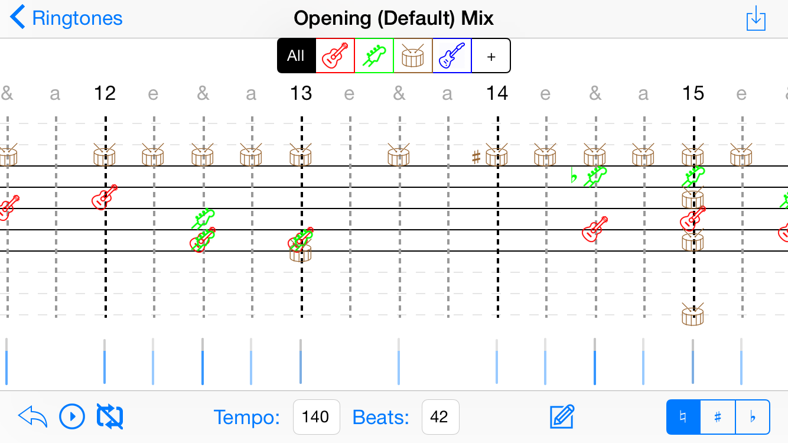

Nir Boneh
Boulder, Colorado
United States
nir.boneh@colorado.edu
United States
nir.boneh@colorado.edu
Hobby
| Name | Experience |
|---|---|
| skiing | 5 years |
| playing guitar | 3 years |
| juggling | 1 years |
Travel
Israel
Lived in Israel since I was born in 1994 up to 2004
Boulder

Lived in Boulder since 2008
Work Experiences
NOAA | Boulder, Colorado
Position: iOS/Android/Web Software Engineer Intern Developer
description: Working on developing project such as CrowdMag and creating a few javascript graphs
Polycom | Wesminster, Colorado
Position: Software Engineer Intern
description: Working on prject involving SQL and JSON for data analysis
Education
Monarch High School
2008-2012Graduated from Monarch High School from Louisville Colorado in 2012 with GPA of 3.7
University Colorado Boulder
2012Working on a computer science degree in the Engineering school
Portfolio
RingSynth (iOS Development)
iOS app designed to create ringtones using a music synthesizer

Skills
| Name | Experience |
|---|---|
| Coding in Java, C, C++, and Javascript | 5 years |
| Experience with SQL, GIT, SVN, HTML, and CSS | 2 years |
| Speaks Hebrew fluently | 21 years |
Honors
| Honor/Award | Date |
|---|---|
| Dean’s List University Colorado Boulder | AY 2012 – 2013 |
| Programming Excellence Award Monarch High School | May 2011 |
References
Tom Yeh
CU Boulder
Professor
555-1082
TomYeh@thisisamadeupemail.zzz
Manoj Nair
NOAA
NOAA Affiliate
(720) 260-4473
manoj.c.nair@noaa.gov
Brian Mapes
Polycom
Software Manager
(303) 223-6639
brian.mapes@polycom.com